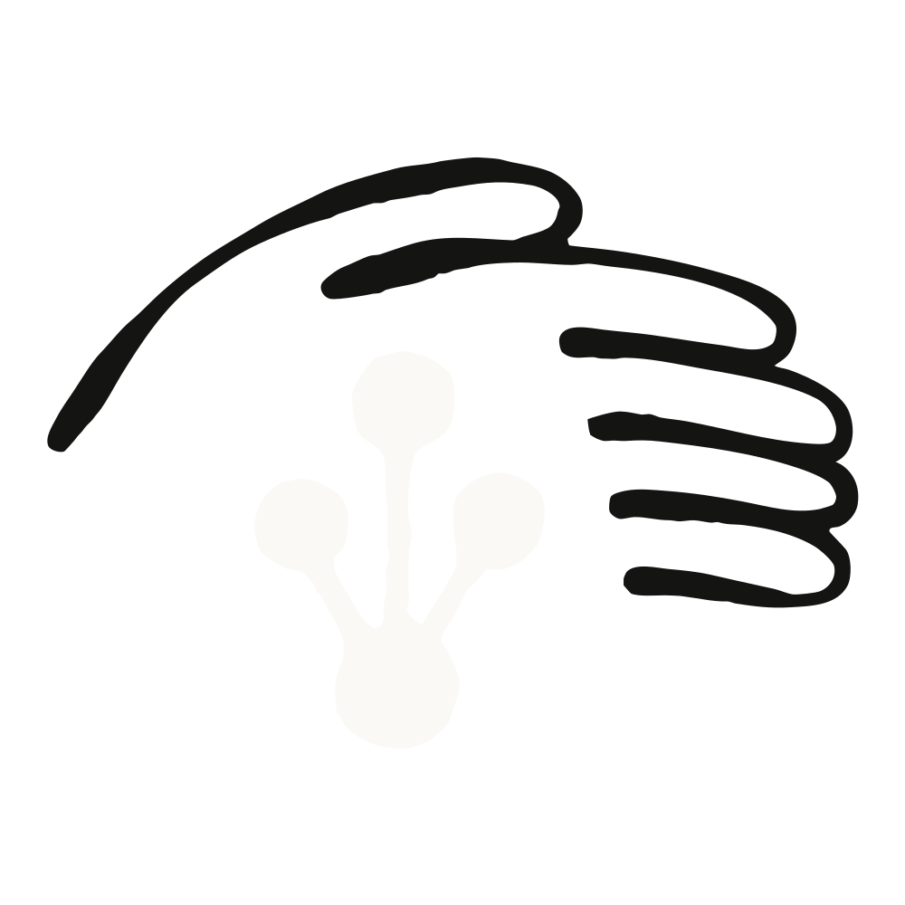

2026年提示工程最佳实践 | Claude by Anthropic
原文

Best practices for prompt engineering for 2026
Get better AI results with prompt engineering techniques from the team behind Claude.
- CategoryAgents
- ProductClaude apps
- DateNovember 10, 2025
- Reading time5min
- ShareCopy linkhttps://claude.com/blog/best-practices-for-prompt-engineering
What is prompt engineering?
Prompt engineering is the craft of structuring instructions to get better outputs from AI models. It's how you phrase queries, specify style, provide context, and guide the model's behavior to achieve your goals.
The difference between a vague instruction and a well-crafted prompt can mean the gap between generic outputs and exactly what you need. A poorly structured prompt might require multiple back-and-forth exchanges to clarify intent, while a well-engineered prompt gets you there in one shot.
It's also the essential building block of context engineering, which has emerged as an increasingly important part of working with LLMs. A poorly structured prompt might require multiple back-and-forth exchanges to clarify intent, while a well-engineered prompt gets you there in one shot. However, prompting is converging with context engineering for Claude 5 generation models — less scaffolding, more curation.
To help you get started, we've assembled some of our team's best practices, including practical methods designed to improve your results right away. We'll start with simple habits you can use today, then scale up to advanced methods for complex projects.
How to use prompt engineering
At its most basic level, prompt engineering is just modifying the query you pass your LLM. Often it's simply adding information to the query before you make your actual request—but knowing which information is the right information to share is the secret to engineering a great and effective prompt.
Core techniques
These prompt engineering techniques form the foundation of effective AI interactions. Use them consistently to see immediate improvements in response quality.
Be explicit and clear
Modern AI models respond exceptionally well to clear, explicit instructions. Don't assume the model will infer what you want—state it directly. Use simple language that states exactly what you want without ambiguity.
The key principle: Tell the model exactly what you want to see. If you want comprehensive output, ask for it. If you want specific features, list them. Modern models like Claude benefit especially from explicit direction.
Example: Creating an analytics dashboard
Vague: "Create an analytics dashboard"
Explicit: "Create an analytics dashboard. Include as many relevant features and interactions as possible. Go beyond the basics to create a fully-featured implementation."
The second version explicitly requests comprehensive features and signals that you want the model to go above and beyond the minimum.
Best practices:
- Lead with direct action verbs: "Write," "Analyze," "Generate," "Create"
- Skip preambles and get straight to the request
- State what you want the output to include, not just what to work on
- Be specific about quality and depth expectations
Provide context and motivation
Explaining why something matters helps AI models better understand your goals and deliver more targeted responses. This is particularly effective with newer models that can reason about your underlying objectives.
Example: Formatting preferences
Less effective: "NEVER use bullet points"
More effective: "I prefer responses in natural paragraph form rather than bullet points because I find flowing prose easier to read and more conversational. Bullet points feel too formal and list-like for my casual learning style."
The second version helps the model understand the reasoning behind the rule, which allows it to make better decisions about related formatting choices.
When to provide context:
- Explaining the purpose or audience for the output
- Clarifying why certain constraints exist
- Describing how the output will be used
- Indicating what problem you're trying to solve
Be specific
Specificity in prompt engineering means structuring your instructions with explicit guidelines and requirements. The more specific you are about what you want, the better the results.
Example: Meal planning
Vague: "Create a meal plan for a Mediterranean diet"
Specific: "Design a Mediterranean diet meal plan for pre-diabetic management. 1,800 calories daily, emphasis on low glycemic foods. List breakfast, lunch, dinner, and one snack with complete nutritional breakdowns."
What makes a prompt specific enough?
Include:
- Clear constraints (word count, format, timeline)
- Relevant context (who's the audience, what's the goal)
- Desired output structure (table, list, paragraph)
- Any requirements or restrictions (dietary needs, budget limits, technical constraints)
Use examples
Examples aren't always necessary, but they shine when explaining concepts or demonstrating specific formats. Also known as one-shot or few-shot prompting, examples show rather than tell, clarifying subtle requirements that are difficult to express through description alone.
Important note for modern models: Claude 4.x and similar advanced models pay very close attention to details in examples. Ensure your examples align with the behaviors you want to encourage and minimize any patterns you want to avoid.
Example: Article summarization
Without example: "Summarize this article"
Here's an example of the summary style I want:
Article: [link to article about AI regulation]
Summary: EU passes comprehensive AI Act targeting high-risk systems. Key provisions include transparency requirements and human oversight mandates. Takes effect 2026.
Now summarize this article in the same style: [link to your new article]When to use examples:
- The desired format is easier to show than describe
- You need a specific tone or style
- The task involves subtle patterns or conventions
- Simple instructions haven't produced consistent results
Pro tip: Start with one example (one-shot). Only add more examples (few-shot) if the output still doesn't match your needs.
Give permission to Claude to express uncertainty
Give the AI explicit permission to express uncertainty rather than guessing. This reduces hallucinations and increases reliability.
Example: "Analyze this financial data and identify trends. If the data is insufficient to draw conclusions, say so rather than speculating."
This simple addition makes responses more trustworthy by allowing the model to acknowledge limitations.
Try these in Claude.
Advanced prompt engineering techniques
These core habits will get you pretty far, but you may still encounter situations that require more sophisticated approaches. Advanced prompt engineering techniques shine when you're building agentic solutions, working with complex data structures, or need to break down multi-stage problems.
Prefill the AI's response
Prefilling lets you start the AI's response for it, guiding format, tone, or structure. This technique is particularly powerful for enforcing output formats or skipping preambles.
When to use prefilling:
- You need the AI to output JSON, XML, or other structured formats
- You want to skip conversational preambles and get straight to content
- You need to maintain a specific voice or character
- You want to control how the AI begins its response
Example: Enforcing JSON output
Without prefill, Claude might say: "Here's the JSON you requested: {...}"
With prefill (API usage):
messages=[
{"role": "user", "content": "Extract the name and price from this product description into JSON."},
{"role": "assistant", "content": "{"}
]The AI will continue from the opening brace, outputting only valid JSON.
Note: In chat interfaces, you can approximate this by being very explicit: "Output only valid JSON with no preamble. Begin your response with an opening brace."
Chain of thought prompting
Chain of thought (CoT) prompting involves requesting step-by-step reasoning before answering. This technique helps with complex analytical tasks that benefit from structured thinking.
Modern approach: Claude offers an extended thinking feature that automates structured reasoning. When available, extended thinking is generally preferable to manual chain of thought prompting. However, understanding manual CoT remains valuable for situations where extended thinking isn't available or when you need transparent reasoning you can review.
When to use chain of thought:
- Extended thinking isn't available (i.e. the free Claude.ai plan)
- You need transparent reasoning that you can review
- The task requires multiple analytical steps
- You want to ensure the AI considers specific factors
There are three common implementations of chain of thought:
Basic chain of thought
Simply add "Think step-by-step" to your instructions.
Draft personalized emails to donors asking for contributions to this year's Care for Kids program.
Program information:
<program>
{{PROGRAM_DETAILS}}
</program>
Donor information:
<donor>
{{DONOR_DETAILS}}
</donor>
Think step-by-step before you write the email.Guided chain of thought
Structure your prompt to provide specific reasoning stages.
Think before you write the email. First, think through what messaging might appeal to this donor given their donation history. Then, consider which aspects of the Care for Kids program would resonate with them. Finally, write the personalized donor email using your analysis.Structured chain of thought
Use tags to separate reasoning from the final answer.
Think before you write the email in <thinking> tags. First, analyze what messaging would appeal to this donor. Then, identify relevant program aspects. Finally, write the personalized donor email in <email> tags, using your analysis.Note: Even when extended thinking is available, explicit CoT prompting can still be beneficial for complex tasks. The two approaches are complementary, not mutually exclusive.
Control the output format
For modern AI models, there are several effective ways to control response formatting:
1. Tell the AI what TO do instead of what NOT to do
Instead of: "Do not use markdown in your response" Try: "Your response should be composed of smoothly flowing prose paragraphs"
2. Match your prompt style to the desired output
The formatting style used in your prompt may influence the AI's response style. If you want minimal markdown, reduce markdown in your prompt.
3. Be explicit about formatting preferences
For detailed control over formatting:
When writing reports or analyses, write in clear, flowing prose using complete paragraphs. Use standard paragraph breaks for organization. Reserve markdown primarily for inline code, code blocks, and simple headings.
DO NOT use ordered lists or unordered lists unless you're presenting truly discrete items where a list format is the best option, or the user explicitly requests a list.
Instead of listing items with bullets, incorporate them naturally into sentences. Your goal is readable, flowing text that guides the reader naturally through ideas.Prompt chaining
Unlike the previous techniques, prompt chaining cannot be implemented in a single prompt. Chaining breaks down complex tasks into smaller sequential steps with separate prompts. Each prompt handles one stage, and the output feeds into the next instruction.
This approach trades latency for higher accuracy by making each individual task easier. Typically this technique would be implemented using workflows or programmatically, but you could manually provide the prompts after receiving responses.
Example: Research summary
- First prompt: "Summarize this medical paper covering methodology, findings, and clinical implications."
- Second prompt: "Review the summary above for accuracy, clarity, and completeness. Provide graded feedback."
- Third prompt: "Improve the summary based on this feedback: [feedback from step 2]"
Each stage adds refinement through focused instruction.
When to use prompt chaining:
- You have a complex request that needs breaking down into steps
- You need iterative refinement
- You're doing multi-stage analysis
- Intermediate validation adds value
- A single prompt produces inconsistent results
Trade-offs: Chaining increases latency (multiple API calls) but often dramatically improves accuracy and reliability for complex tasks.
Techniques you might have heard about
Some prompt engineering techniques that were popular with earlier AI models are less necessary with models like Claude. However, you may still encounter them in older documentation or find them useful in specific situations.
XML tags for structure
XML tags were once a recommended way to add structure and clarity to prompts, especially when incorporating large amounts of data. While modern models are better at understanding structure without XML tags, they can still be useful in specific situations.
Example:
<athlete_information>
- Height: 6'2"
- Weight: 180 lbs
- Goal: Build muscle
- Dietary restrictions: Vegetarian
</athlete_information>
Generate a meal plan based on the athlete information above.When XML tags might still be helpful:
- You're working with extremely complex prompts mixing multiple types of content
- You need to be absolutely certain about content boundaries
- You're working with older model versions
Modern alternative: For most use cases, clear headings, whitespace, and explicit language ("Using the athlete information below...") work just as well with less overhead.
Role prompting
Role prompting defines expert personas and perspectives in how you phrase your query. While this can be effective, modern models are sophisticated enough that heavy-handed role prompting is often unnecessary.
Example: "You are a financial advisor. Analyze this investment portfolio..."
Important caveat: Don't over-constrain the role. "You are a helpful assistant" is often better than "You are a world-renowned expert who only speaks in technical jargon and never makes mistakes." Overly specific roles can limit the AI's helpfulness.
When role prompting might help:
- You need consistent tone across many outputs
- You're building an application that requires a specific persona
- You want domain expertise framing for complex topics
Modern alternative: Often, being explicit about what perspective you want is more effective: "Analyze this investment portfolio, focusing on risk tolerance and long-term growth potential" rather than assigning a role.
Try in Claude.
Putting it all together
You've now seen individual techniques in isolation, but their real power emerges when you combine them strategically. The art of prompt engineering isn't using every technique available—it's selecting the right combination for your specific need.
Example combining multiple techniques:
xtractkeyfinancialmetricsfromthisquarterlyreportandpresenttheminJSONformat.
Ineedthisdataforautomatedprocessing, soit'scriticalthatyourresponsecontainsONLYvalidJSONwithnopreambleorexplanation.
Usethisstructure:
{
"revenue": "valuewithunits",
"profit_margin": "percentage",
"growth_rate": "percentage"
}
Ifanymetricisnotclearlystatedinthereport, usenullratherthanguessing.
Beginyourresponsewithanopeningbrace: {This prompt combines:
- Explicit instructions (exactly what to extract)
- Context (why format matters)
- Example structure (showing the format)
- Permission to express uncertainty (use null if unsure)
- Format control (begin with opening brace)
Choosing the right techniques
Not every prompt needs every technique. Here's a decision framework:
Start here:
- Is your request clear and explicit? If no, work on clarity first
- Is the task simple? Use core techniques only (be specific, be clear, provide context)
- Does the task require specific formatting? Use examples or prefilling
- Is the task complex? Consider breaking it down (chaining)
- Does it need reasoning? Use extended thinking (if available) or chain of thought
Technique selection guide:
| If you need... | Use... |
|---|---|
| Specific output format | Examples, prefilling, or explicit format instructions |
| Step-by-step reasoning | Extended thinking (Claude 4.x) or chain of thought |
| Complex multi-stage task | Prompt chaining |
| Transparent reasoning | Chain of thought with structured output |
| To prevent hallucinations | Permission to say "I don't know" |
Troubleshooting common prompt issues
Even well-intentioned prompts can produce unexpected results. Here are common issues and how to fix them:
- Problem: Response is too generic → Solution: Add specificity, examples, or explicit requests for comprehensive output. Ask the AI to "go beyond the basics."
- Problem: Response is off-topic or misses the point → Solution: Be more explicit about your actual goal. Provide context about why you're asking.
- Problem: Response format is inconsistent → Solution: Add examples (few-shot) or use prefilling to control the start of the response.
- Problem: Task is too complex, results are unreliable → Solution: Break into multiple prompts (chaining). Each prompt should do one thing well.
- Problem: AI includes unnecessary preambles → Solution: Use prefilling or explicitly request: "Skip the preamble and get straight to the answer."
- Problem: AI makes up information → Solution: Explicitly give permission to say "I don't know" when uncertain.
- Problem: AI suggests changes when you wanted implementation → Solution: Be explicit about action: "Change this function" rather than "Can you suggest changes?"
Pro tip: Start simple and add complexity only when needed. Test each addition to see if it actually improves results.
Common mistakes to avoid
Learn from these common pitfalls to save time and improve your prompts:
- Don't over-engineer: Longer, more complex prompts are NOT always better.
- Don't ignore the basics: Advanced techniques won't help if your core prompt is unclear or vague.
- Don't assume the AI reads minds: Be specific about what you want. Leaving things ambiguous gives the AI room to misinterpret.
- Don't use every technique at once: Select techniques that address your specific challenge.
- Don't forget to iterate: The first prompt rarely works perfectly. Test and refine.
- Don't rely on outdated techniques: XML tags and heavy role prompting are less necessary with modern models. Start with explicit, clear instructions.
Prompt engineering considerations
Working with long content
One of the challenges of implementing advanced prompt engineering is that it adds context overhead through additional token usage. Examples, multiple prompts, detailed instructions—they all consume tokens, and context management is a skill in its own right.
Remember to use prompt engineering techniques when they make sense and justify their usage. For comprehensive guidance on managing context effectively, check out our blog post on context engineering.
Context awareness improvements: Modern AI models, including Claude 4.x, have significantly improved context awareness capabilities that help address historical "lost-in-the-middle" issues where models struggled to attend equally to all parts of long contexts.
Why task-splitting still helps: Even with these improvements, breaking large tasks into smaller, discrete chunks remains a valuable technique—not because of context limitations, but because it helps the model focus on doing its best work within a very specific set of requirements and scope. A focused task with clear boundaries consistently produces higher quality results than trying to accomplish multiple objectives in a single prompt.
Strategy: When working with long contexts, structure your information clearly with the most critical details at the beginning or end. When working with complex tasks, consider whether breaking them into focused subtasks would improve the quality and reliability of each component.
Prompt engineering examples: what a good prompt looks like
Prompt engineering is a skill, and it's going to take a few tries before you master it. The only way to know if you're doing it right is to test it and see. The first step is to just try it yourself. You'll see right away the differences between queries with and without the prompting techniques we covered here.
To really hone your prompt engineering skills, you'll need to objectively measure the effectiveness of your prompts. The good news is that is exactly what is covered in our prompt engineering course at anthropic.skilljar.com.
Quick evaluation tips:
- Does the output match your specific requirements?
- Did you get the result in one attempt or need multiple iterations?
- Is the format consistent across multiple attempts?
- Are you avoiding the common mistakes listed above?
Final words of advice
Prompt engineering is ultimately about communication: speaking the language that helps AI most clearly understand your intent. Start with the core techniques covered early in this guide. Use them consistently until they become second nature. Only layer in advanced techniques when they solve a specific problem.
Remember: the best prompt isn't the longest or most complex. It's the one that achieves your goals reliably with the minimum necessary structure. As you practice, you'll develop an intuition for which techniques suit which situations.
For instructions you want applied to every session rather than every prompt, move them into CLAUDE.md files, skills, or other steering methods. However, the shift toward context engineering doesn't diminish prompt engineering's importance.
In fact, prompt engineering is a fundamental building block within context engineering. Every well-crafted prompt becomes part of the larger context that shapes AI behavior, working alongside conversation history, attached files, and system instructions to create better outcomes.
Start prompting in Claude today.
Additional resources
- Prompt engineering documentation
- Interactive prompt engineering tutorial
- Prompt engineering course
- Context engineering guide
No items found.
0/5
eBook
FAQ
No items found.
Start prompting in Claude today.
Start prompting in Claude today.
Related posts
Explore more product news and best practices for teams building with Claude.

Aug 6, 2026
Millennium and Anthropic are building a digital risk analyst with Claude
Enterprise AI
Millennium and Anthropic are building a digital risk analyst with Claude
Millennium and Anthropic are building a digital risk analyst with Claude

Jul 24, 2026
Claude models explained: choosing the best model for your use case
Enterprise AI
Claude models explained: choosing the best model for your use case
Claude models explained: choosing the best model for your use case

Jul 24, 2026
The new rules of context engineering for Claude 5 generation models
Claude Code
The new rules of context engineering for Claude 5 generation models
The new rules of context engineering for Claude 5 generation models

Jul 21, 2026
How Anthropic secures its AI-native software development lifecycle
Claude Code
How Anthropic secures its AI-native software development lifecycle
How Anthropic secures its AI-native software development lifecycle
Transform how your organization operates with Claude
See pricing
Contact sales
Get the developer newsletter
Product updates, how-tos, community spotlights, and more. Delivered monthly to your inbox.
Thank you! You’re subscribed.
Sorry, there was a problem with your submission, please try again later.